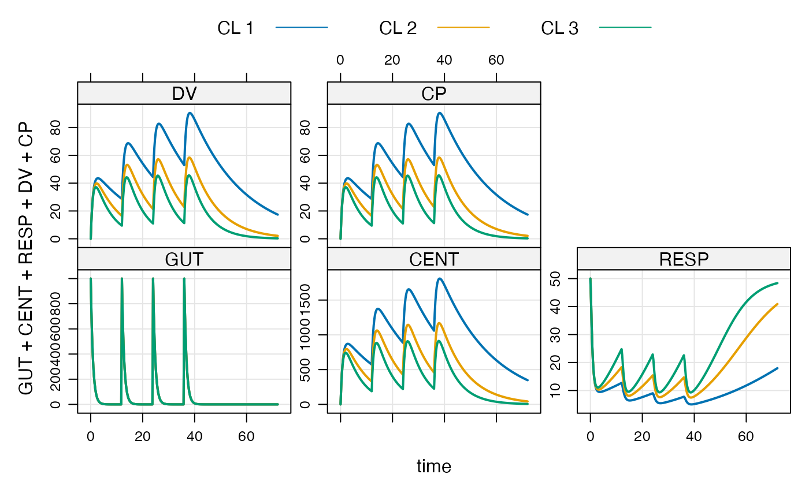
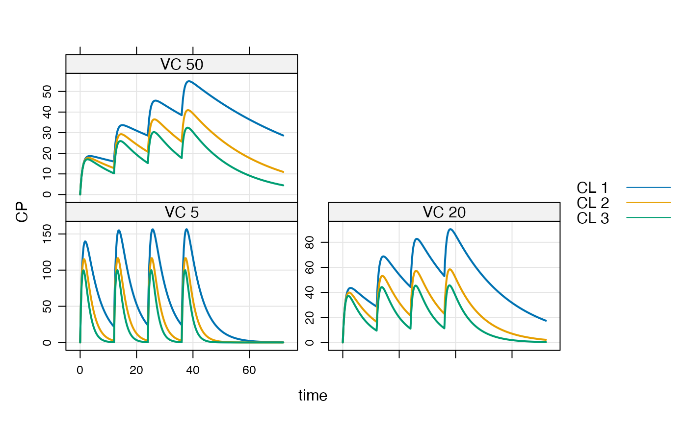
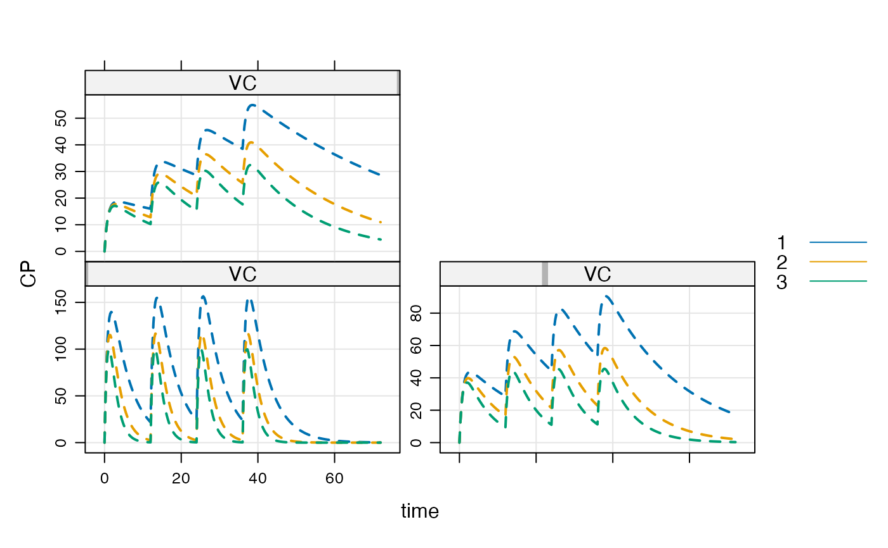
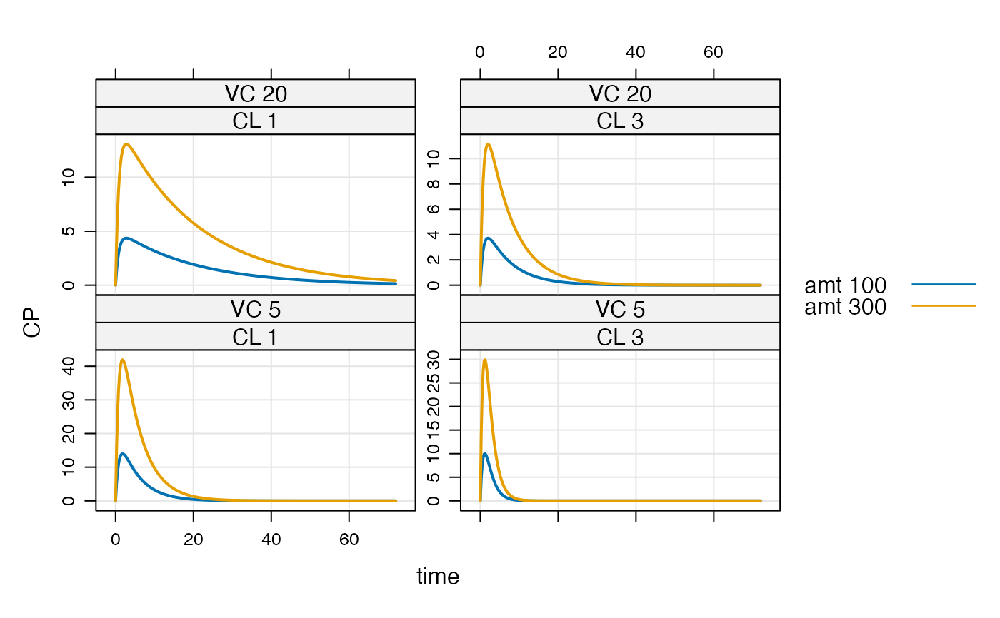

Knobs can be parameter values or PK dosing items (e.g. amt). By design, all combinations of specified knob/values are simulated.
knobs(x, y, ...) # S4 method for mrgmod,missing knobs(x, y, ...) # S4 method for mrgmod,batch_mrgsims knobs(x, y, ...) # S4 method for batch_mrgsims as.data.frame(x, row.names = NULL, optional = FALSE, ...) # S4 method for batch_mrgsims,ANY knobs(x, y, ...) # S4 method for batch_mrgsims show(object)
Arguments
| x | the model object |
|---|---|
| y | a |
| ... | knobs: named numeric vectors that identify knob names and knob values for a batch run. See details. |
| row.names | passed to |
| optional | passed to |
| object | the object to show |
Value
An object of class batch_mrgsims. Most methods for
mrgsims objects also work on batch_mrgsims object.
Details
Valid knob names include: any parameter name (in param(mod)),
time variables (start, end, delta), PK dosing items
(amt, ii, rate, and others ...), and solver settings
(atol, hmax, etc...).
Examples
## example("knobs") mod <- mrgsolve:::house(end=72) events <- ev(amt=1000, cmt=1, addl=3, ii=12) out <- mod %>% ev(events) %>% knobs(CL=c(1,2,3)) plot(out)out#> Model: housemodel #> Batch (head): #> ID CL #> 1 1 1 #> 2 2 2 #> 3 3 3 #> [ CL ] #> #> Head: #> ID time GUT CENT RESP DV CP CL #> 1 1 0.00 1000.0000 0.0000 50.00000 0.00000 0.00000 1 #> 2 1 0.25 740.8182 257.4883 42.29342 12.87441 12.87441 1 #> 3 1 0.50 548.8116 445.0417 32.69422 22.25208 22.25208 1 #> 4 1 0.75 406.5697 580.8258 25.29397 29.04129 29.04129 1 #> 5 1 1.00 301.1942 678.2976 20.05159 33.91488 33.91488 1 #> [ CL ]#>#> Model: housemodel #> Batch (head): #> ID CL #> 1 1 1 #> 2 2 2 #> 3 3 3 #> [ CL ] #> #> Head: #> ID time GUT CENT RESP DV CP CL #> 1 1 0.00 0 0 50 0 0 1 #> 2 1 0.25 0 0 50 0 0 1 #> 3 1 0.50 0 0 50 0 0 1 #> 4 1 0.75 0 0 50 0 0 1 #> 5 1 1.00 0 0 50 0 0 1 #> [ CL ]#> Model: housemodel #> Batch (head): #> ID CL #> 1 1 1 #> 2 2 2 #> 3 3 3 #> [ CL ] #> #> Head: #> ID time GUT CENT RESP DV CP CL #> 1 1 0.00 0 0 50 0 0 1 #> 2 1 0.25 0 0 50 0 0 1 #> 3 1 0.50 0 0 50 0 0 1 #> 4 1 0.75 0 0 50 0 0 1 #> 5 1 1.00 0 0 50 0 0 1 #> [ CL ]